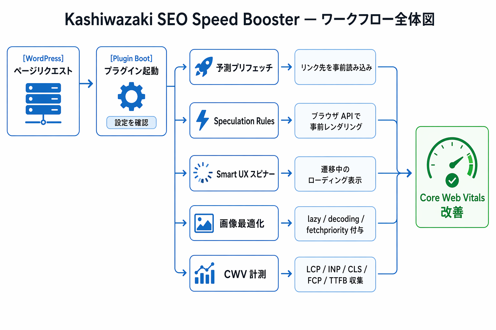

Kashiwazaki SEO Speed Booster マニュアル

サイトの表示速度とユーザー体験を改善する WordPress プラグインです。予測プリフェッチ、Speculation Rules API、Smart UX スピナー、画像最適化の4つの最適化機能に加え、効果を測る計測ダッシュボードと対象を制御する除外 URL パターンの計6機能を搭載しています。
商用 CDN や外部サービスを必要とせず、クライアントサイド JavaScript とサーバーサイド PHP だけで完結する設計です。プラグインを有効化し、管理画面で機能を ON にするだけで動作します。実ユーザーの Core Web Vitals を自動収集するダッシュボードにより、改善効果をデータで確認しながら段階的にチューニングできます。
はじめての方へ
まずはインストール・初期設定ページで、プラグインのセットアップと推奨初期設定を確認してください。
主要機能
高速化
予測プリフェッチ（ホバー・ビューポート・タッチの3層トリガー）と Speculation Rules API（事前レンダリング / 事前プリフェッチ）の2段構えでページ遷移を高速化。
UX 改善
遅い遷移時のみ表示する Smart UX スピナーで体感速度を向上。画像最適化では loading="lazy"・decoding="async"・fetchpriority="high" を自動付与して CWV を改善。
計測・分析
実ユーザーの LCP / INP / CLS / FCP / TTFB を自動収集し、管理画面で時系列グラフ表示。LCP が遅い URL TOP 20 を特定し、改善ループを回せます。
SEO / GEO における強み
SEO（検索エンジン最適化）
- Core Web Vitals の改善: LCP・INP・CLS は Google の検索ランキングシグナルです。予測プリフェッチと画像最適化により、これらの指標を良好な範囲に保つ助けになります
- ページ速度を低下させない設計: フロントエンドの JavaScript は booster.js（プリフェッチ + スピナー）+ web-vitals.js（約5KB）のみ。レンダリングブロックする CSS・JS を追加しないため、FCP・LCP への悪影響がありません
- Speculation Rules による瞬時遷移: Chrome 109 以降では事前レンダリングにより、リンク先のページがほぼ 0ms で表示されます。直帰率の低下やセッション時間の増加に寄与する可能性があります
GEO（生成エンジン最適化）
- 高速なクロール体験: AI 検索エンジンのクローラーにとっても、TTFB・FCP が良好なサイトはクロール効率が高く、インデックス品質の向上が期待できます
- ユーザー体験指標の間接効果: AI 検索がユーザー体験シグナル（ページ速度、直帰率等）を参照する場合、CWV の改善はサイトの信頼性評価に寄与する可能性があります
ノート
本プラグインは構造化データ（JSON-LD 等）を出力しません。SEO / GEO への貢献はページ速度とユーザー体験の改善を通じた間接的なものです。検索順位への直接的な影響を保証するものではありません。

目次
| ページ | 内容 |
|---|---|
| 概要 | プラグインの概要と主要機能の紹介 |
| インストール・初期設定 | プラグインのインストールから初期設定まで |
| 予測プリフェッチ | リンク先の事前読み込み設定 |
| Speculation Rules | ブラウザ標準 API による事前レンダリング |
| Smart UX スピナー | ページ遷移時のローディング表示 |
| 画像最適化 | 画像の遅延読み込みと優先度設定 |
| 計測ダッシュボード | Core Web Vitals の収集と可視化 |
| 除外 URL パターン | 最適化対象の制御 |
| トラブルシューティング | よくある問題と解決方法 |
動作要件
| 要件 | 詳細 |
|---|---|
| WordPress | 6.0 以上 |
| PHP | 8.1 以上 |
| ブラウザ（Speculation Rules） | Chrome 109+ / Edge 109+ |
| ブラウザ（その他の機能） | 全モダンブラウザ |
| JavaScript | 有効（フロントエンドの予測プリフェッチ・計測で必要） |
Core Web Vitals とは
Core Web Vitals は Google が定義するユーザー体験の指標です。検索ランキングにも影響するため、各指標を良好な範囲に保つことが重要です。本プラグインは以下の5つの指標の改善を目的としています。
| 指標 | 正式名称 | 説明 | 良好な値 |
|---|---|---|---|
| LCP | Largest Contentful Paint | ページのメインコンテンツが表示されるまでの時間 | 2.5秒以下 |
| INP | Interaction to Next Paint | ユーザーの操作に対する応答速度 | 200ms以下 |
| CLS | Cumulative Layout Shift | ページのレイアウトのずれ | 0.1以下 |
| FCP | First Contentful Paint | 最初のコンテンツが表示されるまでの時間 | 1.8秒以下 |
| TTFB | Time to First Byte | サーバーの応答開始までの時間 | 800ms以下 |